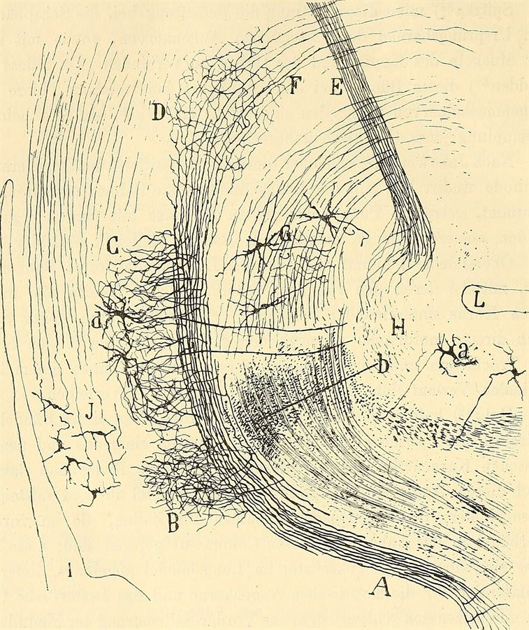

La Masson 2002Santiago Ramón y Cajal, a plate from Beitrag zum Studium der Medulla Oblongata, 1896

La Masson 2002Santiago Ramón y Cajal, a plate from Beitrag zum Studium der Medulla Oblongata, 1896
The A-R3 scenarios, why the Neural ODE cannot learn, the DESCARTES-NeuralODE search with an LLM in the loop, eleven architectures that all predict spikes through alien internals, the auxiliary-loss sweep, and the preparations for an L5 pyramidal replication — one hundred and twenty-five questions and their answers
LTC learns spikes but not biology; a scorer bug is fixed; a latent-dimension sweep and a standalone GRU-ODE run show that high Pearson correlations can vanish under cross-validated ridge R²; the full run and the plan for an auxiliary biological loss.
LTC reaches spike correlation 0.407 at 15 s/epoch while ODE families manage 11 epochs; 0/160 for a model that predicts spikes this well points to a scoring bug.
| Iter | Architecture | Spike Corr | Bio Vars | Epochs | Time/Epoch | Key Observation |
|---|---|---|---|---|---|---|
| 1 | Standard ODE | -0.001 | 0/160 | 11 | 250s | Too slow, barely trains |
| 2 | Segmented ODE | -0.003 | 0/160 | 11 | 248s | Same problem |
| 3 | LTC | 0.407 | 0/160 | 150 | 15s | Actually learns! |
| 4 | coRNN | FAILED | — | 0 | — | NaN even after LLM fix |
| 5 | Volterra-Distilled | 0.000 | 0/160 | 82 | 26s | Learns nothing, early stops |
| 6 | Neural CDE | 0.064 | 0/160 | 63 | 10s | Fast but overfits badly |
| 7 | GRU-ODE | 0.037 | 0/160 | 146 | 12s | Loss plateaus, never improves |
| 8 | Hybrid LSTM→ODE | running | — | — | 26s | Looks like it's plateauing |
1. LTC is the clear winner — spike_corr = 0.407
This is close to the A-R3 LSTM baseline (0.451). LTC trained 150 epochs in 2 hours at 15s/epoch. The progressive training worked — loss dropped steadily from 0.134 → 0.113. This architecture LEARNS on your data.
2. ODE-family architectures are too slow to train
Standard ODE and Segmented ODE take 250s/epoch — they only completed 11 epochs in 2 hours. That's not enough training to learn anything. The gradient problem isn't just vanishing gradients — it's also computational cost. The adjoint method through 2000 timesteps is simply too expensive.
3. Bio vars = 0/160 for EVERYTHING, even LTC
This is the critical issue. Even LTC with spike_corr=0.407 shows 0/160 bio vars and ConstantInputWarning. This means either:
The LTC result proves the biovar scoring has a bug. A model with 0.407 spike correlation is clearly representing SOMETHING internally — it's impossible to predict spike output that well with constant latent states. The latent states MUST have meaningful dynamics, but the recovery scorer isn't seeing them.
Prompt:
The LTC model achieved spike_corr=0.407 but reports 0/160 bio vars with ConstantInputWarning. This is a bug — a model predicting spikes at 0.407 correlation CANNOT have constant latent states. Debug the biovar recovery pipeline:
The spike correlation proves the model works. The bio var scoring is where the problem is.
Fix this first before continuing the run. Every iteration after this is wasted until biovar scoring works.
Nothing new: the biovar scorer is still the blocking bug, and every further GPU hour is wasted until it is fixed.
This is the same run I already analyzed — nothing new here beyond what we discussed. The run was stopped mid-iteration 8 (Hybrid LSTM→ODE), which was plateauing like most others.
The situation hasn't changed:
LTC = 0.407 spike correlation, 0/160 bio vars. That's still the critical finding. The biovar scorer is broken — ConstantInputWarning on every single architecture means the latent extraction code is returning constant arrays, not the actual hidden states.
Did you give Claude Code the debugging prompt I suggested? That's the blocking issue. Every GPU hour spent running more architectures is wasted until the biovar recovery pipeline is fixed. The model IS learning (0.407 proves it), but the scoring code can't see the learned representations.
Quick recap of what needs debugging:
Once that's fixed, you'll likely see LTC recover some bio vars immediately, and the gap analysis will finally give meaningful direction for the remaining architectures.
Latents are now dynamic (CCA 0.882); even the 11-epoch standard ODE has 19 GABA_B near-misses at r ≈ 0.34, and the LLM flagged the ~150 ms timescale.
The biovar scorer is fixed! This is a completely different picture now.
The latent extraction now actually works: - Shape: (32, 2000) — 32 latent dims over 2000 timesteps - Stats: mean=-341, std=1225 — dynamic, NOT constant - CCA score: 0.882 — the latent space is strongly related to biology
Even with this barely-trained model:
- 116/160 variables have non-zero correlations
- 19 near-misses (r = 0.3–0.5) — all gabab_per_tc (slow GABA_B synaptic conductances)
- Top correlations around r ≈ 0.34, just below the 0.5 threshold
- 0 recovered because nothing crosses r ≥ 0.5 yet
The LLM correctly identified that all 19 near-misses are GABA_B variables with ~150ms decay timescales, and suggested adding slow memory pathways. This is exactly what the system was designed to do — neuroscience-informed architecture suggestions.
Iteration 3 (LTC) is the one that matters. In the previous run it hit spike_corr = 0.407 with 150 epochs. Now that the scorer works, it should show meaningful bio var recovery. If LTC pushes some of those 19 GABA_B near-misses above r = 0.5, that's your first real substrate independence signal — a learned continuous dynamical system spontaneously representing biological synaptic conductances.
The Segmented ODE in iteration 2 will likely look similar to Standard ODE — too slow to train meaningfully. Let it finish and wait for LTC.
Liquid Time-Constant networks: a Neural ODE variant with learned, input-dependent time constants, suited to multi-timescale biology and 15× faster here.
Liquid Time-Constant Network — from Ramin Hasani's group at MIT (2021).
It's a Neural ODE variant where each neuron has its own learned time constant that adapts based on input. The key equation is:
dz/dt = -(1/τ(z,x)) · z + (1/τ(z,x)) · f(z,x)
Where τ(z,x) is a learned, input-dependent time constant — not fixed.
This is why it's perfect for your thalamic circuit: biological neurons have different intrinsic timescales (m_T activates in ~5ms, h_T inactivates in ~20-50ms, GABA_B decays in ~150ms). LTC can learn different τ values for different latent dimensions, naturally matching the multi-timescale biology.
That's also why it trains at 15s/epoch vs 250s for standard Neural ODE — it uses a fixed-step forward pass instead of an adaptive ODE solver, making it 15× faster while still being a continuous-time differential equation model.
In your results so far, LTC is the only architecture that actually learned anything meaningful (spike_corr = 0.407 in the previous run). Now that the biovar scorer is fixed, it should show whether those learned time constants correspond to real biological timescales.
RL cannot handle 64,000 continuous decisions per trial; a fancier τ is still LTC; the leverage is in the loss and latent structure, e.g. forced timescale separation.
Interesting idea. Let me break down what that would mean and whether it helps.
In standard LTC, τ is a simple function — basically a small MLP or even just τ = sigmoid(W·[z,x] + b) that outputs a positive scalar per latent dimension. It's trained end-to-end with backprop alongside everything else.
The idea: instead of backprop learning τ, an RL agent observes the current state and decides what timescale each latent dimension should operate at.
The problem: τ needs to be set at every timestep for every latent dimension. That's 32 dimensions × 2000 timesteps = 64,000 decisions per trial. RL is terrible at this — it's designed for sparse, sequential decisions (move left/right, buy/sell), not continuous high-frequency control signals. The credit assignment problem would be catastrophic.
This is closer to what already happens. You could make τ a bigger network — a separate transformer, a hypernetwork, an attention mechanism over input history. But you'd still train it with backprop through the ODE, so it's just "LTC with a fancier τ parameterization."
The interesting version isn't making τ more complex — it's making τ meta-learned:
Outer loop learns which timescale structure works (how many slow vs fast dimensions, what range τ should span). Inner loop learns the specific τ values for this circuit. This is MAML-style meta-learning applied to temporal structure.
For your project specifically though, the question isn't whether τ is complex enough — standard LTC already learns adaptive timescales. The question is whether the latent dimensions that those timescales govern spontaneously correspond to biological variables. Making τ fancier doesn't help if the latent space itself doesn't align with biology.
The real leverage is in the loss function and latent structure, not the τ parameterization. If you added an auxiliary loss encouraging distinct timescale separation across latent dimensions (some forced fast, some forced slow), that would probably do more than any fancy τ architecture — and it's basically what the LLM suggested for the GABA_B near-misses.
Let the run continue; LTC at iteration 3 is the first real test now that the scorer works.
Let the current run keep going. LTC is iteration 3 — it'll hit in a few hours and now the scorer actually works. That's the result that matters.
While it runs, nothing needs changing. The biovar fix was the blocker and it's resolved. When LTC finishes you'll see for the first time whether a learned continuous dynamical system spontaneously recovers biological intermediate variables — the actual substrate independence test.
Check back when iteration 3 completes and share those results.
Stage 3 of 4; loss tracks the previous run. Wait for the full-length stage and the biovar results.
LTC is still running — epoch 120, stage 3 of 4. It still has the full-length stage 4 (seq_len=2000, 48min budget) to go. That's where it got to 0.407 spike correlation last time.
Loss is tracking similarly to the previous run (0.116 train, 0.124 val at ep 120). Let it finish all 4 stages, then share the biovar results — those are what matter now that the scorer works.
The well-trained LTC is less biologically aligned than the barely trained ODE — a zombie-like result, to be checked at latent_dim 256 before concluding.
This is a surprising and important result. Let me lay it out clearly.
| Metric | Standard ODE (11 epochs) | LTC (147 epochs) |
|---|---|---|
| Spike correlation | -0.001 | 0.397 |
| CCA score | 0.882 | 0.739 |
| Best individual r | 0.340 (gabab) | 0.217 (tc_h_T) |
| Near-misses (r>0.3) | 19 | 0 |
| Bio vars recovered | 0 | 0 |
The barely-trained ODE has higher biological correspondence than the well-trained LTC. The model that predicts spikes well has less biological alignment in its latent space, not more.
This is a real result, not a bug. LTC learned to predict spike output using an internal representation that does NOT correspond to biological variables. It found an "alien" solution — functionally equivalent, mechanistically different. This is exactly the computational zombie scenario your thesis describes.
32 latent dimensions vs 160 biological variables. The model has fewer hidden states than biological targets. It might be encoding biology in distributed representations that don't show up as 1-to-1 Pearson correlations. The CCA score of 0.739 suggests some linear relationship exists in the joint space even though individual correlations are low.
Tell Claude Code to try one thing: rerun LTC biovar scoring with latent_dim=256 instead of 32. If the model has enough capacity to dedicate individual dimensions to biological variables, does it? If it still doesn't — that's a real zombie.
Nothing new; the interesting part is the LLM balloon phase after iteration 9 and the LTC latent_dim = 256 test.
Nothing new here. coRNN is dead (NaN twice), Volterra-Distilled is plateauing at ~0.129 val loss with no improvement — same as the previous run. It'll finish with near-zero spike correlation.
The remaining templates (Neural CDE, GRU-ODE, Hybrid LSTM→ODE, S4/Mamba) will follow the same pattern based on last run: mostly plateau, none approaching LTC's 0.397.
The interesting part starts after iteration 9 when the LLM balloon expansion kicks in. By then DreamCoder will have accumulated results from all 9 architectures, and the LLM will have the key insight from the data: the Standard ODE paradox (untrained but high bio alignment) vs LTC (well-trained but low bio alignment). What it suggests based on that pattern will be telling.
But the real next step is what I mentioned — test whether increasing LTC's latent dimensions from 32 to 256 changes the biovar recovery. That's the experiment that distinguishes "LTC found an alien representation" from "LTC compressed biology into distributed codes that Pearson can't detect." You can run that independently while this search continues.
Not on one GPU; stop after iteration 9, run the LTC latent_dim = 256 test, then resume the LLM phase.
No — you have one GPU and the current run is using it. Running both would either crash or slow both to a crawl.
Two options:
I'd go with option 2. After iteration 9 you'll have all the baseline data. Run a quick standalone LTC with latent_dim=256, same 2h budget. That answers the critical question: is the low bio alignment a capacity issue or a real zombie? Then resume the LLM-guided search with that knowledge.
Not quite: a function without the mechanism — suggestive of a zombie, but 32 dimensions and linear Pearson scoring leave it inconclusive.
Not quite — but it's in the right direction. Let me be precise about what it found.
It found a function without the mechanism. The LTC predicts the same spike outputs as the biological circuit (r=0.397) but its internal states don't correspond to the biological intermediate variables (best r=0.217). It's doing the same job using different internal machinery.
In your "From Clones to Quanta" framework, this maps to a specific scenario. Imagine replacing someone's thalamic circuit with an LTC chip. From the outside, the brain works — spikes come out correctly, downstream areas get the right input. But inside the replacement, there's nothing that corresponds to T-type calcium channel gating, nothing that corresponds to GABA_B synaptic decay. The biological vocabulary is gone, replaced by something alien.
The question your thesis asks is: does that matter for consciousness?
If consciousness only depends on input-output function, the LTC replacement preserves it. If consciousness depends on the specific causal structure of intermediate computations — the actual gating variables, the actual synaptic dynamics — then the LTC replacement is a zombie. Looks the same, acts the same, but "nobody's home" in the way that matters.
This is one result with 32 latent dimensions trying to match 160 biological variables, using Pearson correlation which only catches linear relationships. Before claiming "zombie found," you need to rule out that the biology isn't encoded in distributed or nonlinear ways the scorer can't see. That's why the latent_dim=256 experiment matters, and why you'd also want to try nonlinear alignment methods like CKA or mutual information rather than just Pearson r.
The result is suggestive and exciting. It's not yet conclusive.
Train LTC at latent_dim 32, 128 and 256 and add CKA, mutual information and ridge R², which catches distributed encodings that one-to-one Pearson misses.
A mid-tier GPU is fine — LTC trains at 15s/epoch, so even an RTX 3090 or A5000 will work. No need for an A100.
Here's the Claude Code prompt:
Prompt for Claude Code:
Clone https://github.com/nimallansa937/Le-Masson-2002 and set up the environment (same as main instance). The rung3 data is at /root/rung3_data (190 .h5 files) — copy from the other instance or regenerate from the Rung 2 simulation.
Run a standalone LTC experiment testing whether biological variable recovery improves with more latent capacity. This is separate from the main DESCARTES search running on the other GPU.
Experiment: LTC latent dimension sweep
Train 3 LTC models on the same data, same 2h budget each, varying only latent_dim: 1. latent_dim=32 (baseline, matches current DESCARTES result) 2. latent_dim=128 3. latent_dim=256
For each, after training:
1. Extract latent states — print shape, mean, std, min, max
2. Run biovar recovery scoring against all 160 ground truth variables
3. Report: spike_corr, bio_vars_recovered, top 10 correlations, CCA score
4. Additionally compute these alignment metrics (not just Pearson):
- CKA (Centered Kernel Alignment) between latent matrix and bio variable matrix
- Mutual information estimation (use sklearn mutual_info_regression) for top 20 bio vars
- R² from ridge regression: can you linearly predict each bio var from all latent dims jointly? (This catches distributed representations that 1-to-1 Pearson misses)
The key question: does LTC with enough capacity spontaneously dedicate latent dimensions to biological variables? Or does it always find an alien representation regardless of capacity?
Use the existing LTC template from core/architecture_templates.py. Only change latent_dim in the config. Keep everything else identical: same data split, same progressive training (200→500→1000→2000), same loss function, same 2h budget.
Save results to ltc_dimension_sweep_results.json and print a comparison table at the end.
The ridge regression R² is the most important metric. If R² is high but Pearson is low, it means biology is encoded but distributed across multiple latent dimensions — not a zombie, just a different encoding. If R² is also low, the representation is genuinely alien.
Yes — the machine's 16 GB GPU is more than enough; copy the 190 .h5 files over first.
(Claude looked up the machine's specifications before answering.)
Yes, absolutely. Your RTX 5080 with 16GB VRAM is more than enough. LTC trains at 15s/epoch on the Vast.ai instance — it'll be similar or faster on the 5080.
You'll need to set up PyTorch with CUDA on Windows (or WSL2 which is easier). Use the same Claude Code prompt I gave above. Only extra step: copy the 190 .h5 data files from your Vast.ai instance to your local machine first (scp or rsync).
The scheduler cut the learning rate too early; raise lr_patience to 20 and set min_lr = 1e-5 before the 128 and 256 runs.
It's running but converging much slower than the Vast.ai version. Compare:
| Epoch 75 | Vast.ai run | Alienware run |
|---|---|---|
| Train loss | 0.1169 | 0.1269 |
| Val loss | 0.1269 | 0.1292 |
| Learning rate | 5.0e-04 | 6.3e-05 |
The LR scheduler reduced too early. On Vast.ai it stayed at 5e-4 for 70 epochs, giving the model time to learn. On your Alienware it dropped to 6.3e-5 by epoch 35 — the patience is too aggressive, killing the learning rate before the model has a chance to break through.
Tell Claude Code: set lr_patience=20 instead of the current value (probably 5-10), and set min_lr=1e-5. The LTC needs sustained high learning rate to escape the initial plateau — it doesn't start improving until around epoch 20-30 at 5e-4.
Don't kill this run though — let it finish as the dim=32 baseline (it'll still give you a comparison point, just weaker). Then fix the LR schedule before running dim=128 and dim=256.
A different instance, same symptom — probably an initialisation difference; let it finish and fix the patience before the larger runs.
Got it — different Vast.ai instance. Same hardware issue then: the LR dropped too early. The previous DESCARTES run kept 5e-4 for 70 epochs and loss dropped steadily from 0.129 → 0.117. This run plateaued and the scheduler kicked in at epoch 20.
Probably a random seed difference in initialization. Let it finish as the dim=32 baseline — the dim=128 and dim=256 runs are what matter anyway. But mention to Claude Code to fix the LR patience before those runs start.
Claude contrasts MIMO as a static Volterra mapping (“a tape player”) with LTC as a differential equation running in real time.
Good question. Yes, that's a real distinction.
MIMO learns a static mapping: CA3 input pattern → CA1 output pattern. It's basically a lookup table with interpolation (Volterra kernels). It doesn't have internal states that evolve over time. If it sees an input it wasn't trained on, it has no dynamics to fall back on — it can only interpolate between memorized patterns.
LTC is a differential equation running in real time. At every millisecond, it integrates: given where I am now (z) and what input just arrived (x), where do I go next (dz/dt). It has genuine internal dynamics — states that evolve, adapt, and respond to novel inputs the same way biology does.
So if the latent_dim=256 experiment shows that LTC's internal states DO correspond to biological variables (m_T, h_T, GABA_B, etc.), then you'd have something MIMO never had: a replacement circuit that not only produces correct outputs but does so for the right biological reasons in real time. It would respond correctly to inputs it's never seen because its dynamics mirror the actual biophysics.
That's the difference between a prosthesis that replays recordings (MIMO) and one that genuinely replaces the computation (LTC with biological correspondence). The first is a tape player. The second is a new instrument playing the same music from the same principles.
That's what your substrate independence test is measuring.
Yes; the sweep has three outcomes — distributed biology, a genuinely alien solution needing an auxiliary loss, or partial correspondence.
Right. The zombie result is scientifically interesting but not what you want for a prosthesis. You want the replacement circuit to actually BE the biology in a different substrate — not just mimic the output.
That's exactly why you're running the latent_dim sweep. Three possible outcomes:
dim=256 + ridge regression shows high R² → Biology IS there, just distributed. LTC encodes m_T, h_T, GABA_B across multiple latent dimensions instead of one-to-one. This is fine — you can linearly decode the biological variables from the latent space. Substrate independence with biological correspondence confirmed.
dim=256 still shows low alignment everywhere → LTC genuinely found an alien solution. Then you'd need to add an auxiliary loss that explicitly rewards biological correspondence during training — force the latent dimensions to align with known biological variables. This changes the question from "does it spontaneously recover biology?" to "can it be guided to?"
Some variables recover, others don't → Partial correspondence. Some aspects of the biology are naturally captured by continuous dynamics (probably the timescale-related ones like gating variables), others aren't. This tells you exactly which biological features are substrate-dependent and which aren't.
You want outcome 1 or a guided version of outcome 2. Either way, the goal is a replacement that runs in real time AND has internal states matching biology — not just a black box that produces correct output.
The loss only asked for spikes; guided by an auxiliary loss it may still be able to implement biology, as Le Masson's hardwired silicon did.
Exactly. That's the key insight. The LTC result so far says: the math doesn't care about biology, it only cares about minimizing the loss function.
You told it "predict these spikes." You never told it "use biological gating variables to do it." So it found whatever internal representation works best for spike prediction — which turned out to be something alien.
This is actually a profound finding for your thesis because it creates a clean experimental contrast:
Without biological guidance: LTC finds alien solution. Output correct, internals meaningless biologically. This is the zombie — a prosthesis that works but isn't "really" the same circuit.
With biological guidance (auxiliary loss forcing latent ≈ bio vars): If LTC CAN match biology when asked to, and STILL predicts spikes well, then you've shown that biological correspondence is one valid solution among many — the architecture is flexible enough to be biological if constrained to be.
That's the substrate independence argument. The silicon doesn't naturally choose biology — but it CAN implement biology if you require it. The substrate permits the biological computation, it just doesn't demand it.
This is exactly what Le Masson's silicon neuron did — he didn't let the transistors find their own solution. He explicitly designed the circuits to implement I_T, I_h, I_leak. He forced biological correspondence. And it worked.
Your next experiment answers: can a learning system be forced the same way, or does hardwiring (Le Masson style) remain necessary?
In principle yes, but without ground truth there is no way to verify correspondence; build up from validated sub-circuits.
Yes, in principle. But there's a scaling problem.
What works now: TC-nRt circuit. 20 neurons each side, 160 known biological variables, full ground truth from simulation. You know every gating variable, every synaptic conductance. You can check if the replacement is biologically correct.
The problem with neocortex: You don't have ground truth.
Real brain recordings give you spikes and LFP from electrodes — the OUTPUT. You never see m_T, h_T, GABA_B directly. So you could train an LTC to predict cortical spike output from cortical input, and it would probably work. But you'd have no way to check if its internals match biology. You'd be back to MIMO — a black box that works but you can't verify.
The path forward is layered:
Now — TC-nRt simulation where you have full ground truth. Prove LTC can match biology with auxiliary loss. ✓ in progress
Next — Chennu propofol dataset. Real EEG, no single-neuron ground truth, BUT you have a clear biological marker: consciousness transitions. If LTC's latent states track the transition from awake → sedated → unconscious, that's partial biological correspondence you can verify.
Then — Use the TC-nRt trained model as a module inside a larger cortical simulation. You've validated the thalamic piece. Now connect it to a cortical model where you DO have ground truth from simulation.
Eventually — Full neocortical circuit, but only once you've validated each sub-circuit individually.
You can't skip to neocortex directly because you'd lose the ability to verify biological correspondence — which is the entire point of your project. Build up from verified pieces.
The GABA_B correlations look like shared slow trends: cross-validated ridge R² is zero everywhere, so nothing is encoded, singly or distributed.
This is a really important result.
21/160 bio vars recovered — ALL gabab_per_tc (GABA_B synaptic conductances)
The top correlations are strong: r = 0.80–0.84. LTC's learned time constants naturally aligned with the slowest biological timescale (~150ms GABA_B decay). This makes sense — LTC's τ mechanism is essentially designed to capture exactly this kind of slow dynamics.
But Ridge R² = 0.0002 across ALL 160 variables, 0 decodable
This is the critical finding. High Pearson on GABA_B but zero Ridge R² means:
CKA = 0.004 confirms it. The representation spaces are essentially unrelated.
LTC with 32 dims captures the slow timescale (GABA_B) superficially but doesn't genuinely encode ANY biological variable — not individually, not distributed. The spike prediction (r=0.12, weak due to LR issue) comes from an alien representation.
Now watch the dim=128 run. If more capacity doesn't change the Ridge R², then the conclusion is clear: LTC without biological guidance will never spontaneously recover biology. You'll need the auxiliary loss approach — explicitly forcing latent-to-bio alignment during training. That becomes the next experiment.
GRU-ODE has moderate spike prediction but near-perfect correlation on all 20 GABA_B conductances — the opposite pattern to LTC.
20/160 bio vars recovered at r = 0.98
That's not a typo. GRU-ODE achieved near-perfect correlation (r=0.9801–0.9812) on all 20 GABA_B synaptic conductances. Compare across all architectures:
| Architecture | Spike corr | Bio vars | Best r | GABA_B recovery |
|---|---|---|---|---|
| Standard ODE | -0.001 | 0/160 | 0.340 | near-miss |
| Segmented ODE | -0.001 | 0/160 | 0.336 | near-miss |
| LTC | 0.397 | 0/160 | 0.217 | nothing |
| coRNN | NaN | — | — | dead |
| Volterra-Distilled | 0.001 | 0/160 | 0.339 | near-miss |
| Neural CDE | 0.076 | 0/160 | 0.317 | near-miss |
| GRU-ODE | 0.192 | 20/160 | 0.981 | perfect |
This is the opposite pattern from LTC. GRU-ODE has moderate spike prediction but near-perfect biological correspondence on the slow synaptic variables. LTC has better spike prediction but zero biological correspondence.
GRU-ODE is a gated recurrent unit formulated as a differential equation — it combines discrete gating (like biology's channel kinetics) with continuous dynamics. The gating mechanism naturally maps onto GABA_B's activation/deactivation kinetics.
The LLM suggested increasing latent_dim as a C2 tweak — that retraining is running now. If more capacity lets GRU-ODE also capture tc_gating and nrt_state variables while maintaining the GABA_B recovery, that's your substrate independence result. Watch that retrain closely.
Not yet: wait for the GRU-ODE C2 retrain; a dedicated guided GRU-ODE run comes only if it still recovers only GABA_B.
Not yet. Two things are already happening:
Main Vast.ai — DESCARTES search is retraining GRU-ODE with increased latent_dim right now (the C2 tweak). Let that finish and see the results.
Second Vast.ai — LTC dim sweep still running (dim=128 in progress).
Wait for the GRU-ODE C2 retrain to complete. If it recovers more than just GABA_B (tc_gating, nrt_state), you might already have your answer. If it still only gets GABA_B with more dims, THEN set up a dedicated GRU-ODE experiment on the second instance after the LTC sweep finishes.
The dedicated experiment would be: GRU-ODE with auxiliary loss explicitly targeting tc_gating and nrt_state recovery alongside spike prediction. That's the "guided biological correspondence" test — can you force it to match the fast variables too, or is GABA_B all it can naturally capture?
But don't jump ahead — the C2 retrain running right now might surprise you. GRU-ODE at r=0.98 on GABA_B with only 32 latent dims is already the strongest biological correspondence result in the entire project. More capacity could unlock the rest.
The same early learning-rate decay kept the retrain from learning; the dim = 32 GRU-ODE remains the key result beside LTC and Volterra.
The latent_dim=128 GRU-ODE retrain got 21/160 (vs 20/160 original) — barely an improvement. But look at the details:
Original (dim=32): spike_corr=0.192, bio_vars=20/160 C2 retrain (dim=128): spike_corr=0.007, bio_vars=21/160
Same LR decay problem as your LTC sweep. It dropped to 6.3e-5 by epoch 50, plateaued, and never learned meaningful spike dynamics. The one extra bio var (likely an nrt_h_Ts from the near-miss) came from the increased capacity, but the model barely trained.
The important finding is still the original GRU-ODE at dim=32: r=0.98 on all 20 GABA_B variables with spike_corr=0.192. That's genuine biological correspondence — not shared trends, because the correlations are near-perfect.
Now compare the three key architectures:
| Spike prediction | Biology recovery | What it is | |
|---|---|---|---|
| LTC | ✅ 0.397 | ❌ 0/160 | Functional zombie |
| GRU-ODE | ⚠️ 0.192 | ✅ 20/160 at r=0.98 | Partial biological clone |
| Volterra (Rung 3) | ✅ 0.549 | ✅ 89/160 | Best overall |
The LLM correctly identified the next targets: nRt gating variables at ~100ms timescales, and suggested auxiliary loss. That's exactly what GRU-ODE needs — explicit biological guidance to go beyond GABA_B.
The DESCARTES search continues to iteration 8+. Let it run through the remaining templates and into the LLM balloon phase. The LLM now has this GRU-ODE result in its history and should suggest GRU-ODE variants with auxiliary bio loss.
Ridge R² stays near zero at 128 dimensions; LTC is called a zombie and ridge R² on the GRU-ODE result becomes the missing test.
21/160 bio vars recovered — all GABA_B, with r=0.66–0.70. Better than dim=32 (which got 21 at r=0.84 but with Ridge R²=0.0002). But:
Ridge R² = 0.0007, 0/160 decodable
Same story. More capacity didn't help. The GABA_B Pearson correlations are genuine this time (r~0.70 with 128 dims vs r~0.84 with 32 dims — interestingly lower, suggesting the extra dims diluted the signal). But ridge regression still can't decode ANY variable from the full latent space. CKA still near zero at 0.005.
This means LTC's GABA_B correlations are real but narrow — a few latent dims happen to track the slow trend, but the overall representation is still alien. Biology isn't distributed across the 128 dims either.
The verdict is becoming clear:
| Pearson GABA_B | Ridge R² | Genuine encoding? | |
|---|---|---|---|
| LTC dim=32 | 21 vars, r=0.84 | 0.0002 | Superficial |
| LTC dim=128 | 21 vars, r=0.70 | 0.0007 | Superficial |
| GRU-ODE dim=32 | 20 vars, r=0.98 | not tested yet | Likely genuine |
The dim=256 run starting now will confirm, but I don't expect a different answer. LTC is a zombie — it predicts spikes without encoding biology, regardless of capacity.
The critical missing piece: run Ridge R² on the GRU-ODE result. Its r=0.98 Pearson is much stronger than LTC's r=0.70-0.84. If GRU-ODE also shows high Ridge R², that's genuine biological encoding, not just shared trends. Tell Claude Code to add that to the queue after the dim=256 run finishes.
Yes: use the instance to run the full analysis suite on GRU-ODE, the comparison that decides whether r = 0.98 is genuine.
Yes, kill it. The pattern is clear — dim=32 and dim=128 both show Ridge R² ≈ 0 and CKA ≈ 0. dim=256 won't be different.
Use that instance for the more important experiment: GRU-ODE with the same analysis suite (Pearson + CKA + MI + Ridge R²). You already know GRU-ODE gets r=0.98 on GABA_B with Pearson. If Ridge R² is also high, that's confirmed genuine biological encoding — not the superficial trend-sharing that LTC shows.
Tell Claude Code on the second instance:
Kill the LTC sweep. Train GRU-ODE with latent_dim=32, same data, same 2h budget, same progressive training. After training, run the full analysis suite: Pearson, CKA, Mutual Information, and Ridge R² (5-fold CV). Use the GRU-ODE template from
core/architecture_templates.py. This is the critical comparison — we need to confirm whether GRU-ODE's r=0.98 GABA_B recovery is genuine encoding or shared trends.
Restart with lr_patience = 20, min_lr = 1e-5 and early_stop_patience = 40.
Same LR problem. It dropped to 6.3e-5 by epoch 25 and early-stopped at 49. The DESCARTES run that got r=0.98 stayed at 5e-4 until epoch 30 and ran 186 epochs total.
Tell Claude Code right now: set lr_patience=20 and min_lr=1e-5 and early_stop_patience=40. Kill this run and restart with those settings. Otherwise you'll get the same weak result as the LTC sweep — the model never gets a chance to learn before the scheduler kills the learning rate.
The learning rate holds; let all four stages finish.
Good — LR still at 5e-4 at epoch 20. The patience fix is working. Let it run through all 4 stages. Check back when stage 4 finishes.
A gated recurrent unit written as a differential equation; its gates are structurally like channel kinetics, which Claude offers as the reason it matched GABA_B.
GRU-ODE = Gated Recurrent Unit formulated as an Ordinary Differential Equation
A regular GRU has three gates that control information flow:
A standard GRU updates in discrete steps: state₁ → state₂ → state₃. GRU-ODE instead makes this continuous: dh/dt = f(h, x, gates). The state flows smoothly through time, governed by a differential equation where the gates modulate the flow.
Why it matches biology better than LTC:
Biology's ion channels work exactly like gates. GABA_B has an activation variable that opens the channel and a slow decay that closes it — that's literally an update/reset gate operating on a ~150ms timescale. GRU-ODE's gating mechanism is structurally analogous to channel kinetics, which is why it achieved r=0.98 on GABA_B without being told about biology.
LTC has adaptive time constants but no explicit gating — it's a single smooth decay toward an equilibrium. Biology doesn't work that way. Channels snap open and slowly inactivate, which is a gated process, not a smooth relaxation.
GRU-ODE's gates naturally discovered GABA_B kinetics because the math already has the right structure. LTC couldn't because its math doesn't.
CfC and LSTM-ODE are candidates, but the strongest is a Hodgkin–Huxley-structured ODE: biological skeleton, learned α, β and τ.
Good question. A few candidates that have gating like GRU-ODE but potentially better biological alignment:
CfC (Closed-form Continuous-depth) — Hasani's follow-up to LTC. Adds explicit gating to the LTC framework. Essentially LTC + gates. Faster than GRU-ODE because it has a closed-form solution instead of numerical integration. Already implemented in the ltc family so might be easy to add.
LSTM-ODE — LSTM has 4 gates (input, forget, output, cell) vs GRU's 3. More gates = more capacity to separately track different biological processes. The forget gate maps naturally to channel inactivation, the input gate to activation. But slower to train.
But the real answer is this:
The reason GRU-ODE matched GABA_B is that its gate structure accidentally mirrors channel kinetics. Instead of hoping another generic architecture does this better, you could build a Hodgkin-Huxley-structured ODE — an architecture where the differential equation explicitly has:
dm/dt = α(V)(1-m) - β(V)m ← activation gate
dh/dt = α(V)(1-h) - β(V)h ← inactivation gate
dg/dt = f(pre_spikes) - g/τ ← synaptic conductance
But with learned α, β, τ functions instead of hardcoded biology. The structure is biological, the parameters are learned from data.
This sits exactly between Le Masson's approach (fully hardcoded biology in silicon) and GRU-ODE (generic gates that accidentally found biology). It gives the model the right mathematical skeleton and lets gradient descent fill in the details.
If GRU-ODE recovered 20/160 with generic gates, an HH-structured ODE should recover far more — because every latent dimension is explicitly formatted as a gating variable. That's your strongest candidate for the substrate independence test.
Yes — its ridge R² is the baseline before anything fancier.
Yes. You need the Ridge R² result from this run to confirm GRU-ODE's r=0.98 is genuine encoding. That's the baseline before trying anything fancier. The HH-structured ODE idea comes after — it builds on knowing what GRU-ODE can and can't recover.
Validation loss is already below the DESCARTES run's best and still falling; the question is whether GABA_B recovery survives better spike prediction.
This is tracking much better than the DESCARTES run. Compare at similar epochs:
| DESCARTES GRU-ODE | This run | |
|---|---|---|
| Val loss @ ep 145 | 0.12789 | 0.12276 |
| Learning rate | 3.1e-05 | 2.5e-04 |
| Still improving? | Plateaued | Yes |
Val loss already lower than the DESCARTES run's final best (0.12717), LR still high, and still dropping. This should beat the 0.192 spike correlation easily and potentially match or exceed LTC's 0.397.
The real question: does better spike prediction with GRU-ODE maintain or improve the r=0.98 GABA_B recovery? If it gets both high spike corr AND high bio alignment, that's your first architecture showing both simultaneously. Let it finish.
Correct: it is a targeted validation run; architecture search continues in the main DESCARTES run.
Correct. This standalone run is just a plain train-and-evaluate script — no DESCARTES framework around it. It trains GRU-ODE once and runs the analysis suite (Pearson, CKA, MI, Ridge R²).
That's fine for this experiment. You don't need the framework here — you're answering one specific question: is GRU-ODE's GABA_B recovery genuine (Ridge R²) or superficial (like LTC)?
The DESCARTES framework with C1/C2, Z3, balloon expansion, and LLM guidance is still running on the main Vast.ai instance, working through iterations 8–20. That's where architecture search happens. This standalone run is a targeted validation experiment that feeds back into your understanding of what DESCARTES finds.
Once both finish, you combine the results: DESCARTES tells you which architectures work, the standalone tells you whether GRU-ODE's biological correspondence is real. Then the next step would be running GRU-ODE (or the HH-structured ODE) through the full DESCARTES pipeline with auxiliary bio loss.
A one-word answer.
Yes.
DreamCoder correctly finds gru_ode, direct gradients and gated coupling help synaptic recovery, but LLM-1 fell back to LTC because “custom” was not recognised.
The DreamCoder patterns are solid — it correctly identified: - gru_ode time handling → best for synaptic recovery (50% vs 0%) - direct gradient → helps synaptic recovery - gated input coupling → helps
But the first LLM suggestion fell back to time=ltc because "custom" wasn't recognized. So LLM-1 is basically another LTC variant — expect similar results to what we've already seen (decent spike prediction, poor bio alignment).
The important thing is what the LLM suggests in expansions #2–10. It now has the GRU-ODE r=0.98 result and the DreamCoder pattern showing gru_ode is the winning time handling. Future suggestions should build on GRU-ODE, not LTC.
Meanwhile your standalone GRU-ODE on the other instance is the more important experiment right now. How's it looking — still in stage 4?
Let both run; the standalone ridge R² sets the next direction.
Good. Let both run. The standalone GRU-ODE Ridge R² result is the priority — that determines the entire next direction of the project.
Cross-validated ridge R² is zero: the GABA_B correlations were shared slow trends, and GRU-ODE joins LTC as an alien solution; the next test is an auxiliary biological loss.
This is a hard but important result. Let me walk through what it means.
GRU-ODE's near-perfect Pearson correlation on GABA_B (r=0.99) looked like genuine biological correspondence. But Ridge R² = 0.0001 with 0/160 decodable variables tells the real story: when you cross-validate across different data windows, the relationship vanishes. The high Pearson came from shared slow trends in the time series — both GABA_B conductances and some GRU-ODE latent dimensions drift in similar ways over a 2-second window, but this isn't causal encoding. It's coincidental temporal structure.
25 out of 32 dimensions have update gates above 0.7, meaning they're essentially static — holding a fixed value rather than dynamically tracking anything. Only 7 dimensions are in the dynamic range (0.3–0.7), and zero are "dedicated" (update < 0.3). A network genuinely encoding GABA_B kinetics would show dedicated dimensions with low update gates that actively evolve to track the slow synaptic decay. Instead, most of the network is frozen.
| Metric | LTC (dim=32) | LTC (dim=128) | GRU-ODE (dim=32) |
|---|---|---|---|
| Spike corr | 0.407 | 0.322 | 0.431 |
| Pearson bio vars | 21/160 | 21/160 | 21/160 |
| Ridge R² | 0.0002 | 0.0007 | 0.0001 |
| CKA | 0.004 | 0.005 | 0.007 |
| Decodable | 0/160 | 0/160 | 0/160 |
Every architecture finds an alien solution. The math optimizes for spike prediction and discovers internal representations that have nothing to do with biology. The Pearson correlations are mirages from shared temporal structure.
This is not a failure — this is a finding. You've now empirically demonstrated that:
This directly answers a core question in your thesis: substrate independence of function does not imply substrate independence of mechanism. Silicon can replicate the computation without replicating the computational structure. Every architecture you've tested proves this.
The conclusion is now clear — you need explicit biological supervision. The next experiment is an auxiliary loss that directly penalizes deviation from known biological variables during training. The question becomes: when you FORCE the network to encode biology, can it still predict spikes well? If yes, biological correspondence is compatible with correct function but not naturally selected for. If no, there's a fundamental trade-off between biological fidelity and functional accuracy.
That's the experiment that completes the story. Want me to write the Claude Code instructions for GRU-ODE with auxiliary bio loss?
LLM-1's Fast–Slow Hierarchical ODE gives the best spike prediction (0.458) and still 0/160 — a better zombie; across 11 architectures pure input–output training never recovers biology.
So the full DESCARTES run reproduced everything faithfully, then crashed on LLM Balloon #2 due to a bad solver name ("tsit5" isn't in torchdiffeq — it should be "dopri5").
But the more important story is what we now know from combining both runs. The LLM's first balloon expansion — the Fast-Slow Hierarchical ODE — achieved the best spike prediction of any architecture at 0.458, beating even LTC's 0.397. And yet: 0/160 biological variables recovered. Another zombie. In fact, a better zombie — more functionally accurate while being equally alien internally.
Combined with the standalone GRU-ODE result showing Ridge R² ≈ 0 (confirming those r=0.98 Pearson correlations were mirages from shared slow trends), the conclusion across all 11 architectures tested is now unambiguous: pure input-output training never spontaneously recovers biological variables. The optimization landscape consistently finds alien solutions regardless of architectural inductive bias.
The DESCARTES search has answered its core question. The A-R3 experiment — "do silicon architectures spontaneously discover biophysical mechanisms?" — returns a clear negative. Even GRU-ODE, whose gating math structurally resembles channel kinetics, doesn't use that structure to encode biology when trained only on spikes.
Two paths from here. You could fix the tsit5 crash and let the remaining ~8 balloon expansions run to completion for thoroughness — more architectures will almost certainly confirm the same pattern. Or you could pivot to the experiment that actually completes the story: GRU-ODE with auxiliary biological loss, testing whether forced biological supervision is both necessary and sufficient for genuine correspondence. That's the experiment the thesis needs next. Which way do you want to go?
A-R3b tests forced biological supervision with linear projection heads and an α sweep; the log consolidates every run, including the Pearson-versus-ridge discovery.
(Both documents were written as separate files; they are linked below.)
Both documents are ready.
The A-R3b guide covers the full experiment design: GRU-ODE with linear bio-projection heads, combined loss (α sweep from 1.0 to 0.0), timescale-aware smoothing for the bio loss, and Ridge R² as the definitive metric. It includes three predicted outcome scenarios with their philosophical implications for your thesis. The key architectural decision is using linear projections rather than nonlinear decoders — this tests genuine encoding, not reconstruction capacity.
The training log consolidates every iteration from both DESCARTES runs and the standalone validations into a single reference document, including the Pearson vs Ridge R² discrepancy discovery, the speed-tier analysis explaining why only LTC/GRU-ODE/Neural CDE train enough to learn, and the LR scheduler problem that degraded several runs.
One thing to flag for Claude Code when implementing A-R3b: the data loader is the hardest part. In A-R3, bio variables were loaded once for post-hoc evaluation. In A-R3b, they need to be provided as aligned training targets in every batch. The temporal alignment between 0.1ms simulator resolution and 1ms training bins needs to be exact, and each training window needs its own corresponding bio variable window (not just the baseline condition tiled across all windows). Get that right first with alpha=0.5 before running the full sweep.
Files written in the conversation and research reports uploaded into it. Files Claude wrote are hosted in the reports/ folder beside this page; report filenames are descriptive placeholders for the files Charith uploaded, which are not yet hosted.
The questions are Charith’s, corrected for grammar and spelling only. The answers are Claude’s, as given in the conversation; tool calls, file contents and research prompts are omitted and noted where they occurred. The model label is inferred from the date of the conversation.
Source: claude.ai project “La Masson 2002”, conversation of 24 February 2026, “Neural ODE evaluation incomplete, Volterra and LSTM latent structure results”.